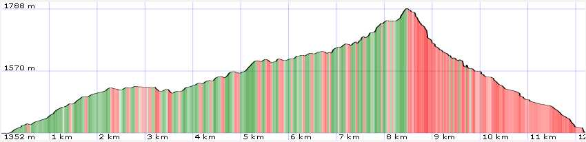
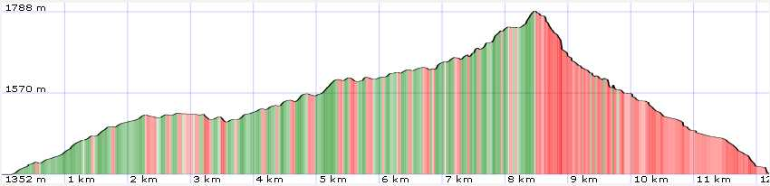

General Information
Map

| data fields | Note |
|---|---|
| number | 025 |
| suitable for |
|
| degree of difficulty |
|
| distance | 13 km |
| difference in altitude | 600 mt D+ and 600 mt D- |
| hiking time | 4h |
| recommended period |
|
| Road surface | dirt road, path |

